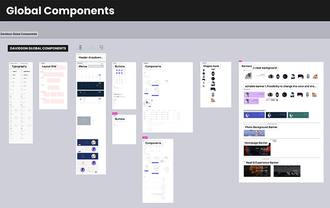

The Davidson platform rolled out in phases. The science museum website came first, letting us meet the museum's opening deadline and establish a working process. As the project expanded into the broader platform, the team grew with it. By that point, the design library was shared across two teams of two designers each. On the surface it appeared unified. In practice, with more people working on the same library, interpretation started to diverge. As the product surface grew, these inconsistencies became more visible in both design and development.
The issue was unclear ownership and inconsistent interpretation of the design system. Different teams had adapted the system to fill gaps in their day-to-day work: component naming and usage diverged, patterns evolved independently, and teams made local optimizations that didn't hold up across the product.
This fragmentation threatened brand consistency and slowed delivery and handoff between teams. The governance work took a couple of weeks to put in place; adoption followed as teams began using the clearer structure.
- Multiple autonomous design teams working on separate products and product areas
- Existing system already in use (no greenfield reset)
- Need to preserve team autonomy while reducing divergence
I approached the design system as a living product.
First, I led an audit to understand where the system had diverged, why teams had adapted it, and which inconsistencies were intentional versus accidental.
I established a dedicated design system lead and defined a contribution and governance model. This meant clarifying which elements were shared and non-negotiable, and where teams kept flexibility. Adoption was framed as enablement, not enforcement.

Global components after governance: shared, documented, and maintained centrally.
Teams that had previously built their own interpretations of shared components began referencing the central system as a starting point rather than a fallback.
Duplication decreased as designers recognized that the system now reflected how they actually worked, not how someone imagined they should work. The contribution model meant that adaptations made by individual teams could feed back into the shared library rather than quietly diverging from it.
Design–engineering handoff became more predictable on the component level. Engineers knew where to look, what was canonical, and when to escalate a discrepancy rather than make a judgment call.
The system moved the debate to the right forum.
Design systems fail when ownership is unclear and contribution norms go unspoken, rarely from missing components. What the audit showed consistently: every divergence had a reason. Teams weren't ignoring the system out of carelessness. They were filling gaps it didn't cover. Starting there, with the 'why' behind each divergence, is what made the governance conversation productive rather than defensive.